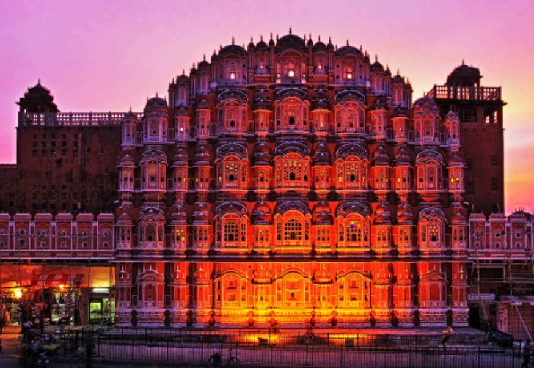

The Lotus, India's national flower, symbolizes purity and beauty.

The Peacock is India's national bird, renowned for its vibrant plumage.
The Taj Mahal, a UNESCO World Heritage Site, is a global symbol of love.
The Red Fort in Delhi is an iconic symbol of India's history and culture.

Hawa Mahal, or the Palace of Winds, is known for its unique façade and history.
Diwali, also known as the Festival of Lights, is one of the most celebrated Hindu festivals. It marks the victory of light over darkness and good over evil.
Holi, often referred to as the Festival of Colors, is a vibrant and joyous Hindu festival that celebrates the arrival of spring